Physical Computing 1 · MA Computational Arts · Goldsmiths · 2025
The Bonnet
A headpiece that veils your face when it sees a camera watching. A custom-trained model looks for CCTV; when it finds one, a servo lowers a fabric blind over the face.
video, 2 min · vimeo.com/1144358503
Facing the reality of ubiquitous surveillance, I asked how we might protect our biometric data through what we wear.
The piece responds to the condition of the algorithmic gaze — where the human face has stopped being a biological feature and become a trackable data point. In public space, privacy is no longer the default state. It has to be actively defended.
I come to this from fashion. I have always wanted to push garments past utility, back to the oldest purpose of clothing: protection. From the weather, from contact — and now from an unwanted gaze.
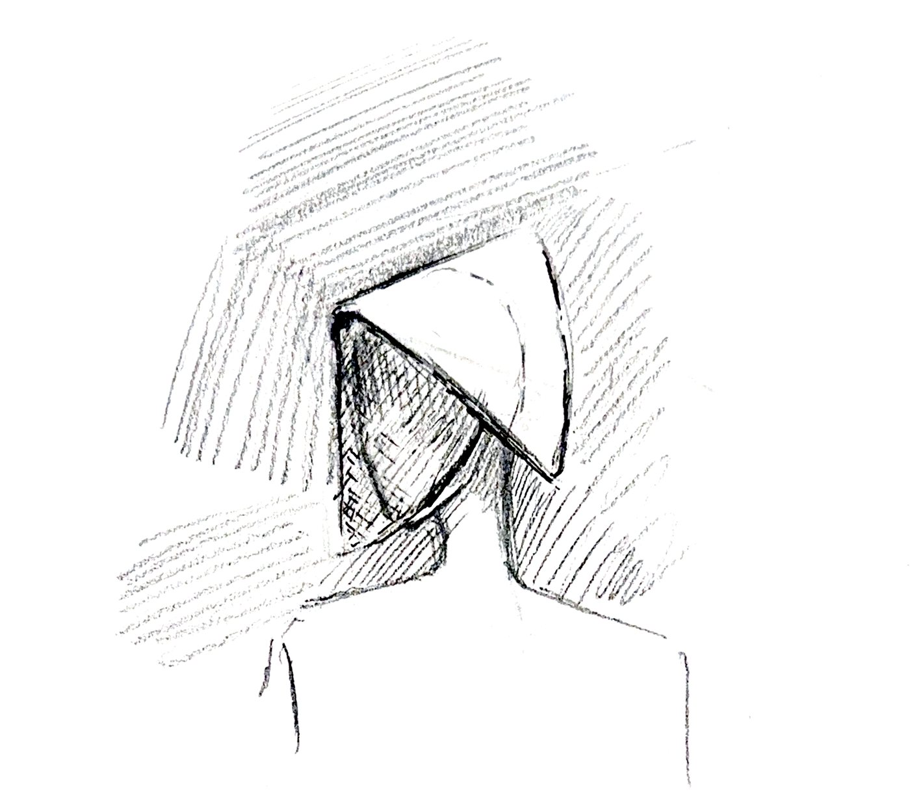
the first drawing — before any of it could detect anything
It uses the oppressor's tools to fight the oppression.
The silhouette is borrowed twice over: from the 19th-century poke bonnet of Amish modesty, and from the wings of The Handmaid's Tale. Both were designed to narrow the wearer's field of view and enforce submission.
The Bonnet turns that logic inside out. It leaves your vision alone and blocks the world's view of you instead — computer vision, the instrument of the watching, repurposed as the trigger for hiding. The bonnet becomes a tool of voluntary anonymity rather than imposed modesty.
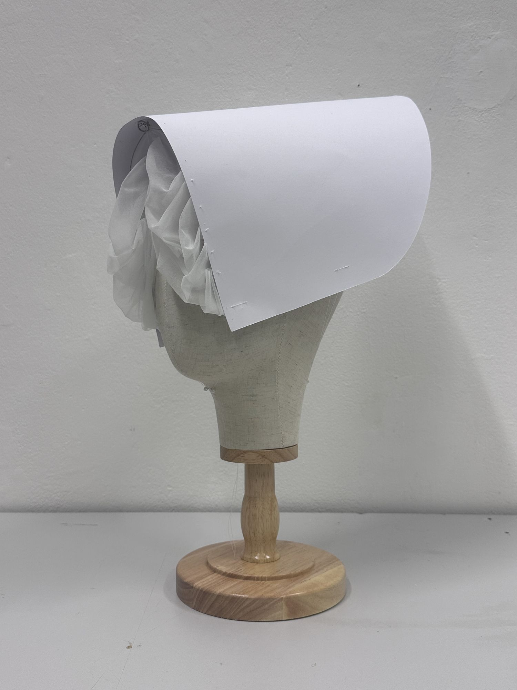
the hood, in its worn position
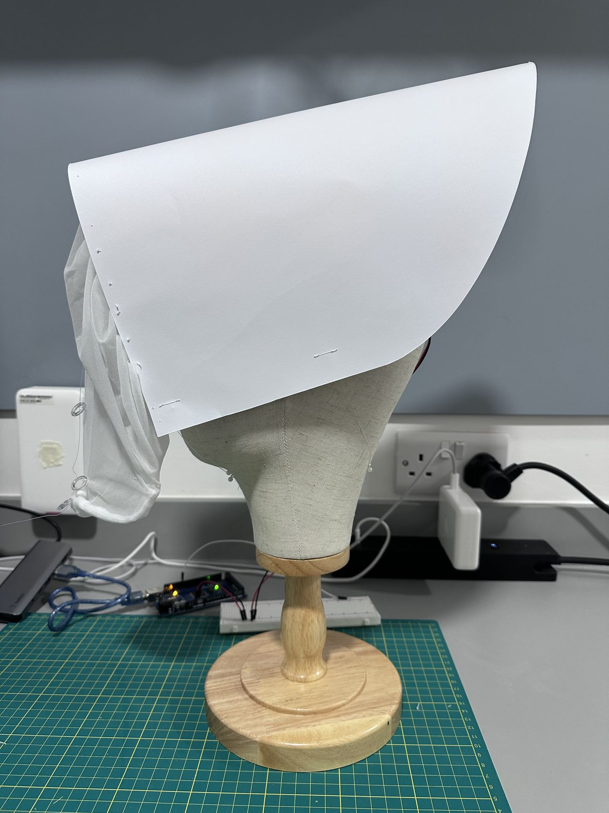
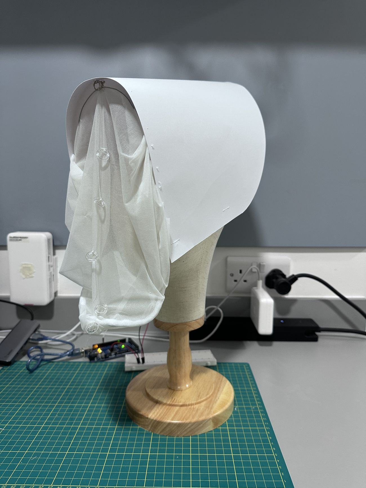
the same bench, seconds apart — hood tipped back to show the veil wound up (left), and the veil let down in front of the face (right). That is the whole interaction
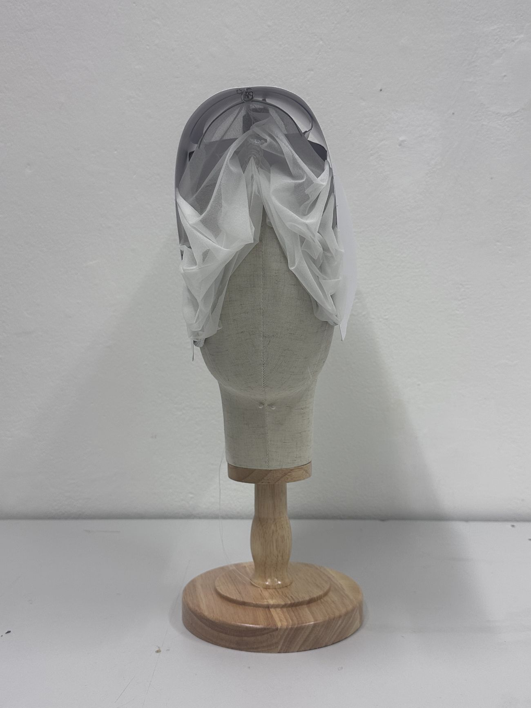
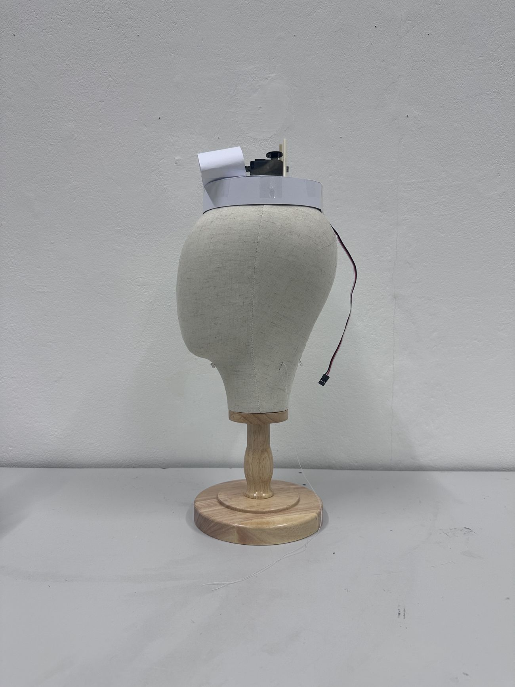
what the camera sees once it has been seen (left) · the mechanism with the hood taken off (right)
A camera that looks for cameras.
I curated and labelled a dataset of surveillance cameras on Roboflow and trained a YOLOv8 model on it, so the system recognises the thing watching rather than the face being watched. A webcam feed runs through the model in Python and the verdict travels to an Arduino over serial.
Two details made it usable. Frame skipping — only every third frame is processed — cut the load enough to keep the video responsive. Debounce logic on the Arduino holds the veil down for at least five seconds after a trigger, so a camera glimpsed for half a second doesn't make the piece twitch.
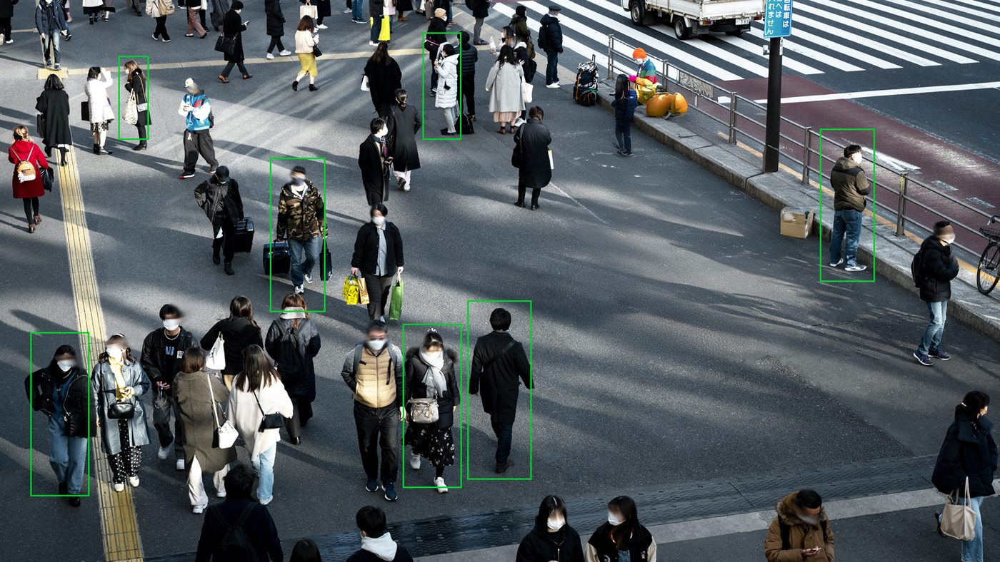
the condition the piece answers to
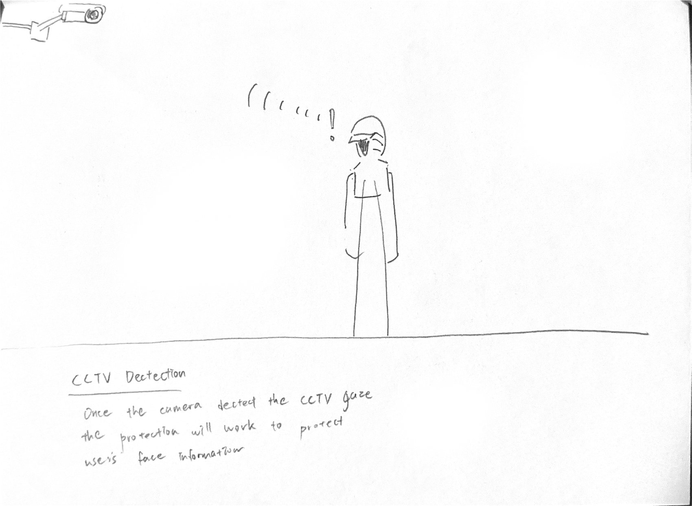
"once the camera detects the CCTV gaze, the protection will work to protect the user's face information"
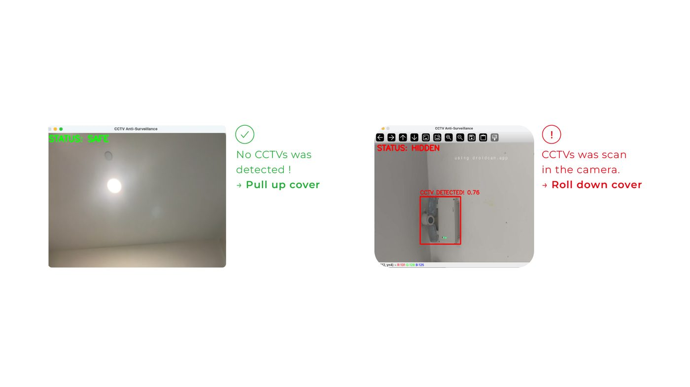
the only two states the system can be in — and the red box that decides which
The first mechanism did not survive contact with a head.
The piece was going to inflate. I wanted an organic, breathing defence — airtight bladders swelling to close the opening. Testing killed it: getting bladders to seal reliably inside a head-worn garment turned into its own construction problem, and it was pulling the work away from the thing that actually mattered, which is how fast the gaze gets blocked.
So I pivoted to a winch. A 360° continuous-rotation servo (MG996R) winds a soft veil up and down like a Roman blind — a textile mechanism, not a pneumatic one. That let the remaining time go into the fabric: it has to be soft enough to gather, and weighted at the hem so it falls instead of catching.
Order of work. Software first. I got the detection pipeline working before touching the physical build, so that when the mechanism changed, the sensing did not have to.
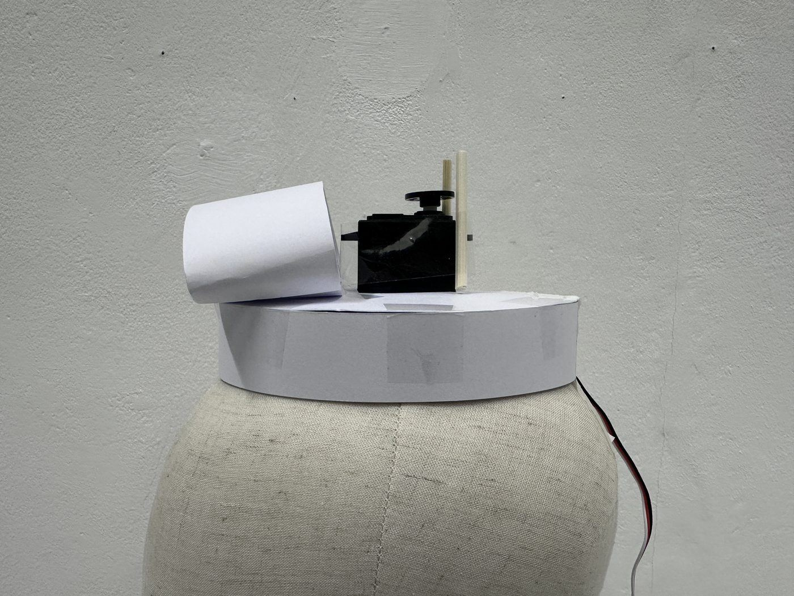
the winch that replaced the inflation system
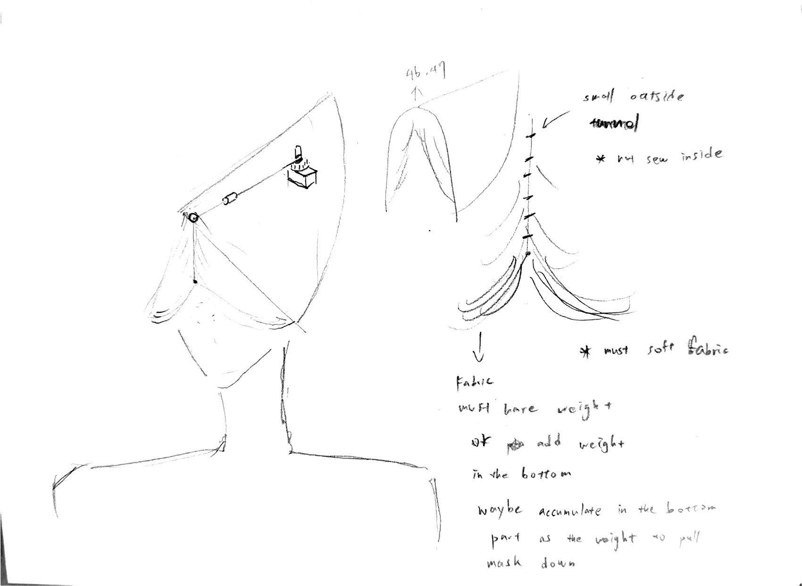
the notes that decided the fabric: must be soft · must have weight · accumulate it at the hem so it pulls the mesh down
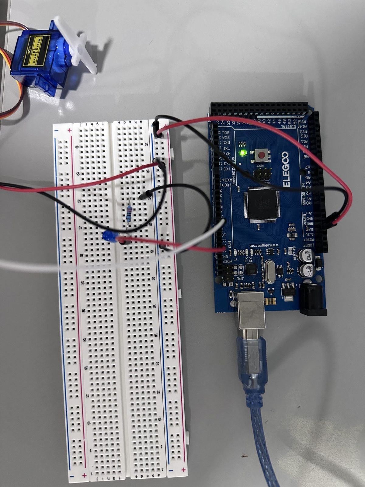
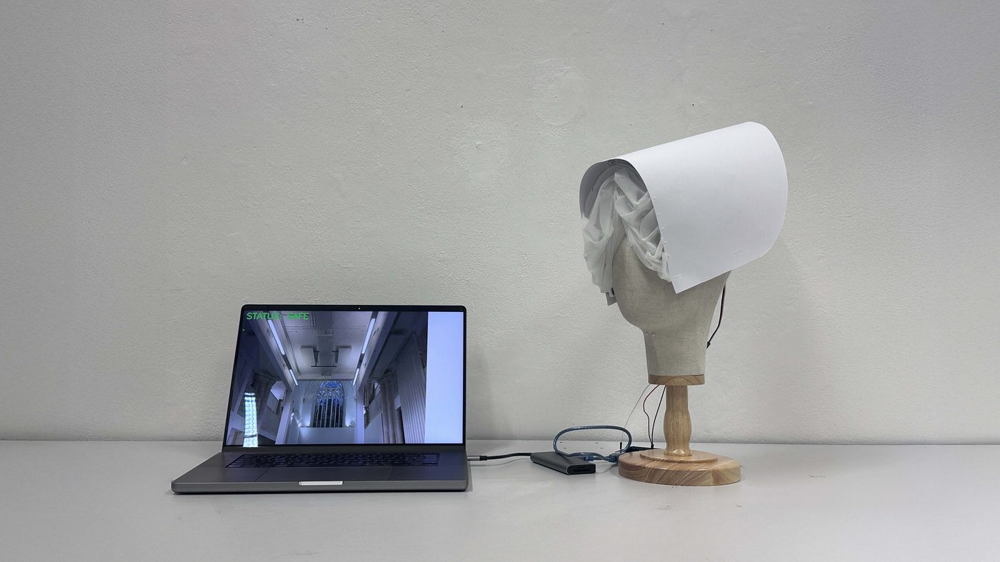
first wiring · on the bench · running against a live feed
04 — where it stands
what works, what doesn'tIt demonstrates that a wearable can actively defend biometric data rather than only collect it — a physical firewall against the algorithmic gaze.
It is also, honestly, a tethered object. The cables that make the detection possible are the same cables that keep it from being worn down a street, which is the only place the argument would really be tested.
- worksdetects a surveillance camera in a live webcam feed and deploys the veil without intervention
- tetheredthe current setup runs from a laptop over USB, so mobility is limited. Moving the pipeline onto a Raspberry Pi is the next step
- accuracythe model still needs fine-tuning to separate human faces from surveillance cameras reliably
- nextadversarial fashion — textile patterns that confuse recognition before the veil ever has to move
- referenceBehnaz Farahi, Caress of the Gaze (2016)
- datasetCCTV detection set built and published on Roboflow